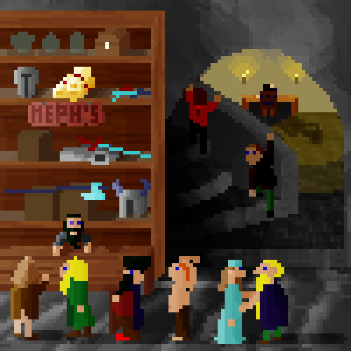

Forts
Here a list of succession forts, community forts and stories, that happened in the mod. Its a wild mix! If you yourself want to start a community fort, go ahead and make a new thread here. Just make sure to add ☼ to the title, so that people can directly see that its a modded fort. And if you send me the link, I will add it to the list!
☼Bellweasel☼ - Cleansed in carpling blood
☼Glimmerring☼ - Human Fortress by the sea
Adventures on Pirate Island (*Masterwork* Community Game)
Ghoshash Snazaga, "Cleaver of Ignorance," a ¤MDF Orc Fort¤ tutorial (Ch 22)
☼Riverrun, a Masterwork Community Dwarf Fortress☼
☼Cobaltpacked☼- Kobold Community/Tutorial Fortress
Clawedgears: A Gnome Artifice (Masterwork DF)
The Littlest Cheesemaker (Illustrated Interactive Story)
Orcs of Sinmourned, a masterwork tale
V.4g Hexxedgarish - AboveGround Dwarf Challenge
UnholinessSparked - Let's Play Orc Fortress (rebalanced)
Craftrazors: Another 4e Merchant Fortress
Cursecoppers: A MWDF .4d Merchant Fortress
SteelyCathedrals - Glacier Succession Fort - Players Wanted!
MWDF 4j, RegalDoom, and the little Warlock who couldn't.
The luckiest tourist EVER (Update underway...)
V.4i - Frozen Kobold Fortress - Challenge Accepted
V.4i - Frozen Kobold Challenge
V.4i Henteldentebi - Kobold Submarine Challenge
V.4j Bonald - Kobold Submarine Challenge #2
V.4h Becordobar - Mastermind Dwarf Challenge
The Increasingly Tragic Tale of Dumplin
Adventures on Pirate Island (*Masterwork* Community Game)
☼Masterwork Succession Fortress: Willedabyss☼
GreedyLittleBastards. A ☼Masterwork Multi-verse in 4i☼
☼Questravagers II☼: A 4j community warlock fortress[On hiatus]
Slay the Lady of Pain - a MDF illustrated story (Part III Posted)
The Rise of the Lich. [A Masterwork tale]
☼CharmingButtocks☼ - Warlock Dungeon
☼Cathedral☼ - Curious Underground - 2000 units down. Looking for Overseers!
The Ancient and Serious Fortress ☼Vigorropey☼
☼Nashonrimtar Alnis - tales of the bloody banner☼
☼SILVERGOOSE☼ Of Masterworks, Mephs and Magma.
| BogClasps |: ☼Fistful of Carp☼ [Succession Fortress][Players Wanted]
Dwarves vs Orcs: A Masterwork Twin Succession
Earthslip (my first MW play (4g))